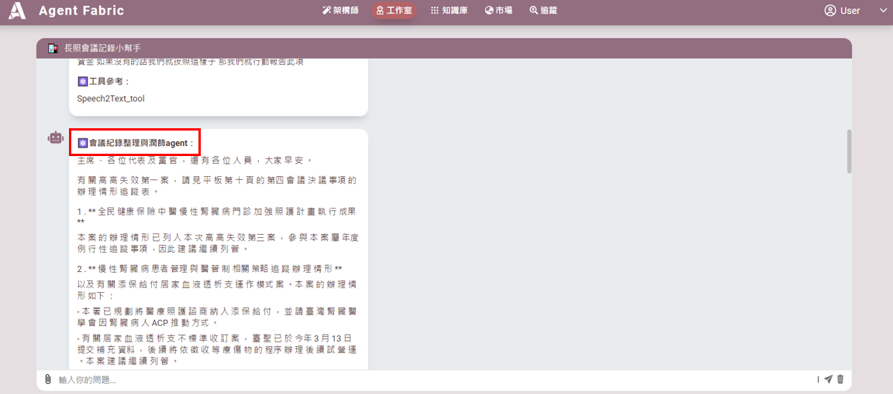

如何使用語音轉文字功能_語音轉文字_會議記錄小幫手
範例_語音轉文字_會議記錄小幫手
**語音轉文字會議記錄小幫手，是一款專為學生班會和企業會議設計的工具，能夠將語音檔快速轉換為文字，方便用戶整理會議內容。這款小幫手特別適合需要準確會議紀錄的人士使用，但由於轉錄的準確性可能受到環境和語音質量的影響，因此建議用戶在使用前設定以下三個代理:「語音轉文字 Agent」-將音檔轉成文字稿，「會議記錄整理與潤飾 Agent」-修正文字內容，「會議報告生成 Agent」-進行文章摘要。 **
🔶 創建步驟請參考，範例_長照法規AGENT
語音轉文字編輯
1. 開啟會議記錄小幫手
- 進入 工作室，選擇「會議記錄小幫手」。

2. 配置「語音轉文字 Agent」
在 標題 1「語音轉文字 Agent」 中進行以下配置：
- 名稱: 語音轉文字 Agent
- 描述: 將檔案轉換成文字。
- 任務: 將檔案轉換成文字。
- 選擇工具: 使用 Speech2Text_tool。

3. 配置「會議記錄整理與潤飾 Agent」
在 標題 2「會議記錄整理與潤飾 Agent」 中進行以下配置：
- 名稱: 會議記錄整理與潤飾 Agent
- 描述:
你是一個會議記錄整理專家，專門處理會議記錄內容。你會進行排版、改正錯字、潤飾語句，並將內容整理得更易於閱讀，同時保持原始信息的完整性。
- 任務:
1. 閱讀會議記錄的文字。
2. 修正拼寫和語法錯誤，優化語句結構。
3. 排版內容，確保條理清晰，便於閱讀。
4. 確保不改變實質內容，也不添加標題或其他新內容。

4. 配置「會議報告生成 Agent」
在 標題 3「會議報告生成 Agent」 中進行以下配置：
- 名稱: 會議報告生成 Agent
- 描述:
你是一個會議報告生成專家，負責根據已整理的文字生成會議報告。
- 任務:
1. 使用整理後的紀錄文本，不自行添加新內容或進行創作。
2. 基於收到的文字，轉換成以下格式的會議記錄：
```markdown
# 會議記錄
會議名稱:
會議時間:
地點:
主席:
出席人員:
## 一、報告事項
- 第一項:
內容:
摘要:
- 第 X 項:
內容:
摘要:
## 二、決議事項
- 決議一:
內容:
摘要:
- 決議 n:
內容:
摘要:
## 三、追蹤事項
- 內容:
摘要:
結論:
5. 在 工作室 中，點選「會議記錄小幫手」。
6. 將會議語音檔案上傳至綠色框中。填寫備註，說明會議記錄內容。
7. 上圖和下圖的紅色框中將顯示整理後的會議記錄結果。
